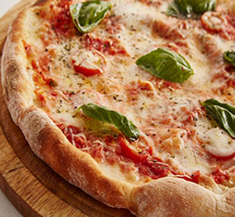

WHAT'S A WHOLE GRAIN? A REFINED GRAIN?
All grains start life as whole grains. In their natural state growing in the fields, whole grains are the entire seed of a plant. This seed (also called a “kernel”) is made up of three edible parts – the bran, the germ, and the endosperm – protected by an inedible husk that protects the kernel from assaults by sunlight, pests, water, and disease.
What’s a “Refined Grain?” An “Enriched Grain?”
“Refined grain” is the term used to refer to grains that are not whole, because they are missing one or more of their three key parts (bran, germ, or endosperm). White flour and white rice are refined grains, for instance, because both have had their bran and germ removed, leaving only the endosperm. Refining a grain removes about a quarter of the protein in a grain, and half to two thirds or more of a score of nutrients, leaving the grain a mere shadow of its original self.
Since the late 1800s, when new milling technology allowed the bran and germ to be easily and cheaply separated from the endosperm, most of the grains around the world have been eaten as refined grains. This quickly led to disastrous and widespread nutrition problems, like the deficiency diseases pelagra and beri-beri.
In response, many governments recommended or required that refined grains be “enriched.” Enrichment adds back fewer than a half dozen of the many missing nutrients, and does so in proportions different than they originally existed. The better solution is simply to eat whole grains, now that we more fully understand their huge health advantages.
WHOLE GRAINS A TO Z
The grains below, when consumed in a form including the bran, germ and endosperm, are examples of generally accepted whole grain foods and flours.
- Amaranth (Amaranthus cruentus)
- Barley (Hordeum vulgare)
- Buckwheat (Fagopyrum esculentum)
- Bulgur (Triticum ssp.)
- Corn (Zea mays mays)
- Einkorn (Triticum monococcum L)
- Farro / Emmer (Triticum turgidum dicoccum)
- Fonio (see Millet)
- Freekeh (Triticum turgidum var. durum)
- Kamut® Khorasan Grain (triticum turgidum turanicum)
- Kañiwa (Chenopodium pallidicaule)
- Millet (Panicum miliaceum, Pennisetum Glaucum, Setaria italica, eleusine coracana, digitaria exilis)
- Oats (Avena sativa)
- Quinoa (Chenopodium quinoa)
- Rice (Oryza sativa)
- Rye (Secale cereale)
- Sorghum / Milo (Sorghum spp.)
- Spelt (Triticum aestivum spelta)
- Teff (Eragrostis tef)
- Triticale (x triticosecale rimpaui)
- Wheat (Triticum aestivum; Triticum turgidum)
- Wild Rice (Zizania spp.)
GLUTEN FREE WHOLE GRAINS
Most people find whole grains are a delicious way to improve their health, and they enjoy the pleasures of choosing among all the different whole grains. However, the millions of people who can’t properly digest gluten must choose their grains carefully. Luckily for them, most grains are gluten free, except (Wheat-including varieties like spelt, kamut, farro and durum; and products like bulgur, semolina-, Barley, Rye, Triticale).
WHAT ARE THE HEALTH BENEFITS?
Studies show that eating whole grains instead of refined grains lowers the risk of many chronic diseases. While benefits are greatest with at least 3 servings daily, some studies show reduced risks from as little as one serving daily. The message: every whole grain in your diet helps!
Of course, these benefits are most pronounced in the context of an overall healthy diet. No one food – even whole grains – will guarantee good health. It’s also important to remember that some whole grain foods are healthier than others. Plain grains — from brown rice and quinoa to wheat berries –– and whole grain pasta should be a regular feature on your table, with processed grains eaten less often. Sure a whole grain cookie is better for you than a refined grain one, all other ingredients being equal — but it’s still a cookie!
THE MAIN BENEFITS OF WHOLE GRAIN
The benefits of whole grains most documented by repeated studies include:
- reduced risk of stroke
- reduced risk of type 2 diabetes
- reduced risk of heart disease
- better weight maintenance
- less inflammation
- lower risk of colorectal cancer
Try some of these delicious recepies whole grains via (Whole Grains Council):
|  | |||
| Whole Wheat Pizza Crust | Apple Cinnamon Oatmeal | Whole Wheat Bread | Tabouleh |